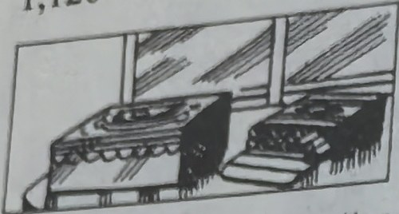
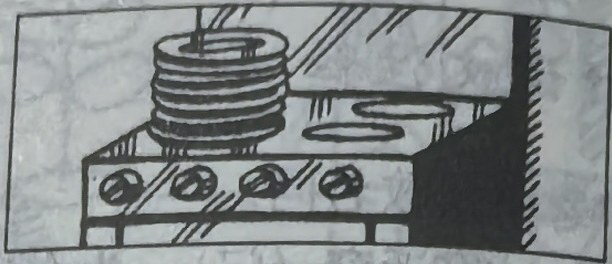
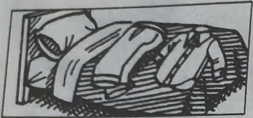
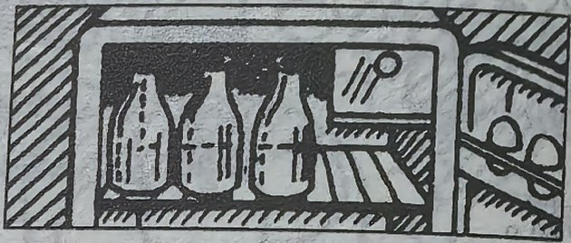
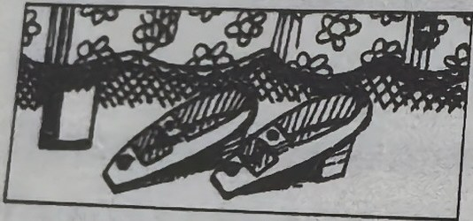
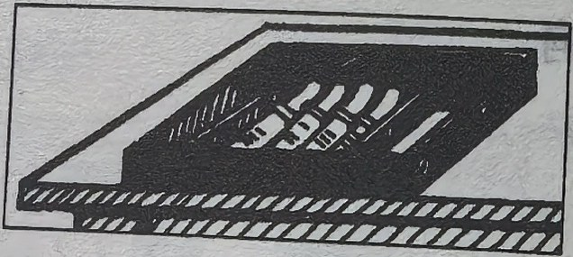
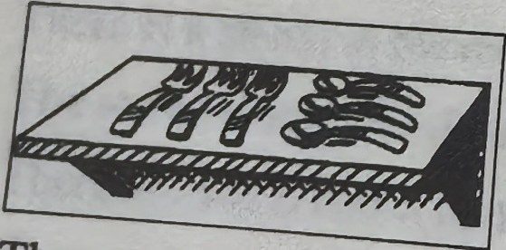
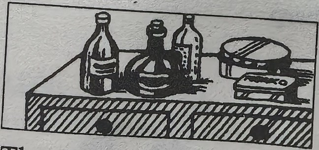
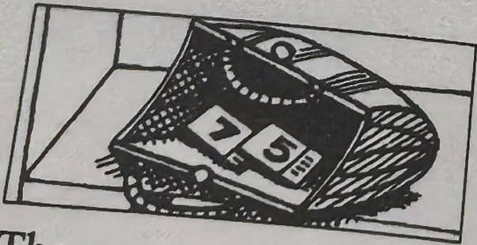
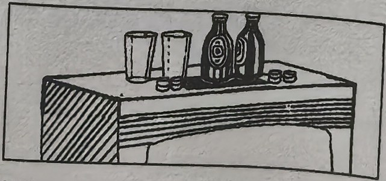

Lesson content · 课文
Lesson 28: Where are they? · 它们在哪里？
Listen and answer the questions. 听录音并回答问题。

They are near that box." decoding="async">They are near that box.

They are clean." decoding="async">They are clean.

They are near that shirt." loading="lazy" decoding="async">They are near that shirt.

They are empty." loading="lazy" decoding="async">They are empty.

They’re near the bed." loading="lazy" decoding="async">They’re near the bed.

They’re in that box." loading="lazy" decoding="async">They’re in that box.

They’re near those spoons." loading="lazy" decoding="async">They’re near those spoons.

They’re near those tins." loading="lazy" decoding="async">They’re near those tins.

They’re in that handbag." loading="lazy" decoding="async">They’re in that handbag.

They’re near those bottles." loading="lazy" decoding="async">They’re near those bottles.
New words and expressions · 生词和短语
| Word · 单词 | Pronunciation · 音标 | Meaning · 词义 |
|---|---|---|
| trousers | /ˈtraʊzəz/ | n. 〔复数〕长裤 |
Practice · 课文练习
Written exercises · 书面练习
A. There are
Look at these words: a book — some books; a man — some men; a housewife — some housewives. 注意单数名词和复数名词的区别。
Rewrite these sentences using There are. 模仿例句改用 There are 的结构。
Example · 例句
There is a book on the desk. → There are some books on the desk.
-
textbook: A. There are — There is a pencil on the desk.
-
textbook: A. There are — There is a knife near that tin.
-
textbook: A. There are — There is a policeman in the kitchen.
-
textbook: A. There are — There is a newspaper in the living room.
-
textbook: A. There are — There is a keyboard operator in the office.
B. Write sentences · 对话练习
Write sentences using these words. 模仿例句写出相应的对话。
Example · 例句
(books) / on the dressing table / cigarettes / near that box
Are there any books on the dressing table?
No, there aren’t any books on the dressing table.
There are some cigarettes.
Where are they?
They’re near that box.
-
textbook: B. Write sentences · 对话练习 — (books) / in the room / magazines / on the television
-
textbook: B. Write sentences · 对话练习 — (ties) / on the floor / shoes / near the bed
-
textbook: B. Write sentences · 对话练习 — (glasses) / on the cupboard / bottles / near those tins
-
textbook: B. Write sentences · 对话练习 — (newspapers) / on the shelf / tickets / in that handbag
-
textbook: B. Write sentences · 对话练习 — (forks) / on the table / knives / in that box
-
textbook: B. Write sentences · 对话练习 — (cups) / on the stereo / glasses / near those bottles
-
textbook: B. Write sentences · 对话练习 — (cups) / in the kitchen / plates / on the cooker
-
textbook: B. Write sentences · 对话练习 — (glasses) / in the kitchen / bottles / in the refrigerator
-
textbook: B. Write sentences · 对话练习 — (books) / in the room / pictures / on the wall
-
textbook: B. Write sentences · 对话练习 — (chairs) / in the room / armchairs / near the table
Practice worksheet · 配套练习
A. Plurals
Write the plurals and sort them into columns: man, armchair, picture, window, knife, book, plate, cigarette, box, housewife, wall, shoe, woman, shelf, ticket, glass, child. 用复数形式改写以下句子。
-
worksheet: A. Plurals — Regular plurals ending in /s/
-
worksheet: A. Plurals — Regular plurals ending in /z/
-
worksheet: A. Plurals — Regular plurals ending in /ɪz/
-
worksheet: A. Plurals — Irregular plurals
B. A, an or some
Fill in a, an or some. 完成以下练习。
-
worksheet: B. A, an or some — There are ____ knives on the table.
-
worksheet: B. A, an or some — There’s ____ bottle in the cupboard.
-
worksheet: B. A, an or some — There’s ____ empty bottle on the table.
-
worksheet: B. A, an or some — There are ____ children in the kitchen.
-
worksheet: B. A, an or some — There’s ____ electric cooker in her kitchen.
C. There is or there are
Fill in There is or There are. 完成以下练习。
-
worksheet: C. There is or there are — ____ a small television in the kitchen. It’s new.
-
worksheet: C. There is or there are — ____ some trousers in the cupboard. They’re grey.
-
worksheet: C. There is or there are — ____ a bed near the window. It’s large.
-
worksheet: C. There is or there are — ____ some glasses near the cups. They’re clean.
-
worksheet: C. There is or there are — ____ two armchairs near the door.
Grammar practice · 语法练习
I. Fill in the blanks with question words
Use Where, Whose, Who, What, Which, What colour, or What make.
- ___ are the tickets?
They're in the kitchen.
- ___ is this pen?
It's Anna's.
- Give me some magazines, please.
___ ones? These?
- ___ is that car?
It's a Volvo.
- ___ is your coat?
It's black.
- ___ is that young woman?
That's Jane.
- ___ nationality is that man?
He's French.
- ___ is my coat?
It's on your bed.
- ___ are these trousers?
They're my brother's.
- ___ is there near the window?
An armchair.
II. Answer questions using the cues
Example: Where are my cigarettes? (in the living room/on the table) -> They're in the living room. They're on the table.
- Where are my cigarettes? (in the living room/on the table)
They're in the living room. They're on the table.
- Where are the flowers? (near the bed/in the vase)
- Where are my shoes? (near the television/under your armchair)
- Where are our shirts and coats? (on the bed/in the bedroom)
- Where are the dirty plates? (in the kitchen/on the table)
- Where are the knives and forks? (in the kitchen/in the cupboard)
- Where are your passports? (on the dressing table/in a box)
- Where are the empty tins? (near the door/in the box)
III. Fill in the blanks with some or any
- Are there ___ pictures on the wall?
Yes, there are ___ lovely pictures on the wall.
- Are there ___ men in the garden?
No, there aren't ___ men in the garden.
- Are there ___ dirty glasses on the table?
No, there aren't. There are ___ clean ones in that box.
- There are ___ magazines on the table.
Are there ___ magazines on the table? There aren't ___ magazines on the table.
- Are there ___ ice creams in the refrigerator?
- There are ___ sales reps in the office.
Your notes and answers
Use this space for longer responses or exercises that do not have an individual answer box.